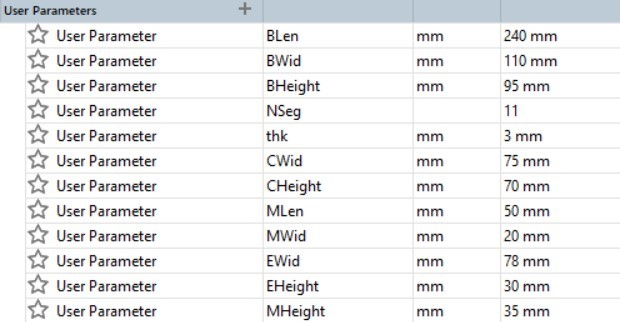
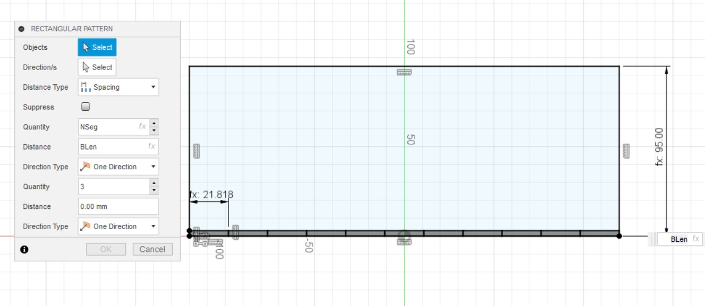
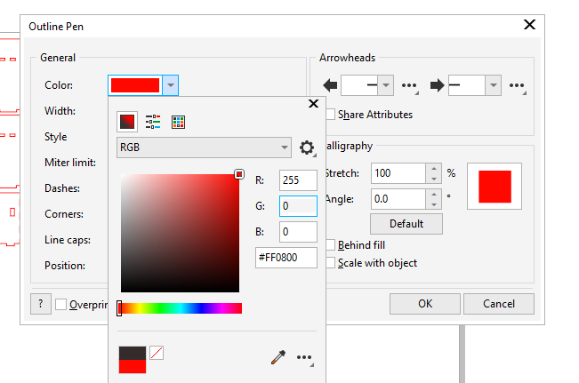

Introduction
In this webpage I will be documenting my final project: The Cardshuffler. I've always liked to play card games and since coming to poly, I my friends and I started to play them at every opportunity. So I decided to build a card shuffler as my project and here is where i got my inspiration from. In this webpage, I will give a brief desciption of the project, explain the design and fabrication process, what components will be used and how the project was coded.
Project Description
What does it do?
This is a machine used to shuffle cards. A rocker switch is used to turn on the card shuffler. A deck of cards is then split in half and each placed onto a loading platform. When a pushbutton is pressed, Continuous Servo Motors under each platform spins and shuffles the half decks into the middle chamber. The cards may then be extracted via an opening on the front wall of the card shuffler.
What are its features?
- 2 Continuous Servo Motors to shuffle cards
- 2 Loading platforms for half a deck of cards each
- Middle chamber for cards to fall into
- A Rocker Switch to on and off the shuffler
- A Psuh Button to start and stop the shuffling
What will I be making? | |||||||||||||
|
|
Bill of Materials | |||||||||||||||||||||||||
|
|


CAD Design
Card Shuffler Frame
Here are the parameters used for the Card Shuffler Frame using the parameters function:
Next are the sketches for the base and front sides of the box. The teeth are sketched using the rectangle command and dimensioned using Blen/ NSeg. The rectangular pattern is used as a shortcut to get the correct amount of teeth. The settings are set as Distance Type: Spacing, 1st Quantity: NSeg and Distance: BLen. The teeth are then constrained using a series of coincident and collinear constraints.
The base and front are both extruded by thk before using the combine function to make sure that the teeth dosent join together.
The side wall is sketched like this. The line function is used to draw a middle line and then changed to construction line. Next, the rectangle and rectangular pattern functions are used to draw the teeth. These are the settings for the horizontal teeth, Distance Type: Spacing, 1st Quantity: NSeg and Distance: BWid. For the vertical teeth, the settings are, 2nd Quantity: NSeg and Distance: -BHeight. The teeth are then constrained using a series of coincident and collinear constraints.
Afterwards, the mirror function is used to mirror the teeth over to the other side of the wall. The shapes to be mirrored and the mirror line are selected before they are mirrored. Once, the sketch is done, it is extruded by -thk using new body.
The move/ copy function is used by selecting translate and inputing X Distance: -Cwid and Create Copy to make the chamber walls. Construct: Offset Plane is used by selecting XY Plane and inputing Distance: CHeight to make the loading platforms.
The loading platform is sketched like this. Line function is used again to draw a middle line which is changed to construction line. Next, the rectangle and rectangular pattern functions are used to draw the teeth. These are the settings for the horizontal teeth, Distance Type: Spacing, 1st Quantity: NSeg and Distance: CWid. For the vertical teeth, the settings are, 2nd Quantity: NSeg and Distance: -BWid. The teeth are then constrained using a series of coincident and collinear constraints.
Afterwards, the mirror function is used to mirror the teeth over to the other side of the wall. The shapes to be mirrored and the mirror line are selected before they are mirrored. Next, the rectangle function is used to draw the rectangle and is dimensioned using MLen and MWid. Then extruded by -thk.


The mirror function is used to mirror the side wall, chamber wall, and loading platform using the YZ Plane. move/ copy is then used by selecting Create Copy, and point to point. The points selected should be the inner corner of the front wall and the outer corner of the base.
Next, the combine function is used to make sure that the all of the teeth on the different pieces dosent join together. (The images below only show 2 examples of the combination)
Lets move on to the seperators (keeps all the cards from spilling out) and the motor holes. A sketch is started on the right chamber wall and then the bodies right wall and loading platformare turned off. Line function is used to draw a middle line and is changeed to construction line. Next, a rectangle is drawn and dimensioned as 2.5mm in width before being constrained using the coincident function to the bottom of the third teeth. Draw another rectangle and collinear it to the bottom of the first rectangle. Dimension it using MLen and MWid before using the symmetry function to align it to the centre of the construction line. Once done with the sketch, it is extruded to cut a hole of distance -90mm so that it reaches the left chamber wall.
Now for the motor holders. A sketch is started on the motor hole of the loading platform and then the front wall body is turned off. A rectangle of width: MHeight and length: MLen and construction lines 25mm from the top and 30mm from the right edge are drawn. A centre rectangle is created at the intersection of the construction lines and dimensioned as length: 24mm and width: 12.6mm. 2 circles of diameter 2mm are sketched on the horizontal construction line and the distance between them is dimensioned to be 27mm. The symmetry function is used again to align it to the centre of the vertical construction line. Once finished, the sketch is extruded -thk.
Next, the motor holder is moved using the move/ copy function by Y Distance: 10mm and the body is mirrored around the YZ plane.
Combine is used to make sure that the all of the teeth on the different pieces dosent join together. (The images below only show 2 examples of the combination)
A sketch is drawn on the front wall, with a middle construction line. Next, a rectangle is sketched and dimensioned 78 by 30 mm, 6mm from the bottom edge and aligned it to the middle line. The rectangle is extruded by -thk to make the exit hole for the shuffled cards. Another sketch is started on the right wall and a circle of diameter: 15.2mm is drawn and dimensioned by 27.5 and 45 mm away from the left and bottom edge respectively. The circle is extruded by -thk to make the hole for the momentary push button.
A sketch is created on the left wall and will be the same as the one drawn on the right wall with the only difference being the size of the circle at diameter 20.2mm. The circle is extruded by -thk to make the hole for the toggle switch. Last but not least, another sketch is created on the back wall a 15 by 13 mm rectangle is drawn and dimensioned by 15 and 6 mm away from the left and bottom edge respectively. A diameter 11mm circle is alsor drawn and dimensioned by 25 and 13 mm away from the right edge of the previously drawn rectangle and the bottom edge respectively. Lastly, a 5 by 8 mm rectangle is drawn and dimensioned by 36 and 8 mm away from the bottom edge and left edge of the chamber wall teeth. The shapes are then extruded by -thk to make the holes for the wires.
And there you have it! the CAD design for the card shuffler frame!
5cm Wheels
The design for the wheel is very simple. I only needed to sketch a 50 mm diameter circle and extrude it symmetrically by 5mm. This would give the wheel a total thickness of 1 cm.

Laser Cutting
The sketches of the Cardshuffler frame are all exported as DXF and pasted onto CorelDraw.

All the lines of the parts are changed to RGB 255,0,0 (Red) for cutting and hairline thickness. Once done, Ctrl+P is used to bring up the printer settings and print is selected to send the drawings to the lasercutting software.
In the laser cutting software, the pieces are placed according to the dimensions of the size of the material that I am cutting from. In this case, im using a 80 x 36 x 3 cm board. Thus I placed my pieces at the top left hand corner of the machine. Next, I clicked on Settings and then Load.
The 3mm plywood, red cut, green engrave.las file is selected and openned. This will automatically configure the laser cutter settings to the type of material being used. Once done, Apply and Ok are pressed in settings. Lastly, the big green play button is pressed to start the laser cutting process.
Once done laser cutting, wait a while to let the fumes be sucked away before extracting the pieces.
3D Printing
The file is exported as STL and imported into Ultimaker Cura. Use Rotate and then lay flat to position the wheel flat on the board.

Next, multiply selected is used after right clicking the piece and number of copies: 1 is inputted so that the wheel is duplicated. Thereafter, the printer settings are set to the following:
- Remove Support and Adhesion.

- Creality CR 10-s is used for Preset Printers.
- Use Custom in Printer Settings and set Quality: 0.28mm.

Slice is used to convert the 3D model into individual layers and previewis used to see the supports and the printing time.

After the steps are all completed on Cura, the file is saved and copied over to a SD Card. The SD card is then inserted into the printer before the wheel file is selected and the printing process commences.

After the printer is done printing, the wheels are left to cool down till around 45 degrees before being removed.
Embedded Programming
Configuration
FS90R pins:

- Connect the ground and 5V pins from the arduino to the board.
- Connect the ground and 5V pins from the servos to the board vertically.
- Connect pin 11 to the push button on the board.
- Connect the pushbutton to ground on the board.
- Connect the signal pins of the servos to pin 10 (left motor, servo2) and pin 9 (right motor, servo1) on the arduino.

Please note that the tinkercad simulation does not have continuous servos motor and thus a standard 180 degree servo motor was used.
- 90 degrees = stop
- 180 degrees = full speed in one direction
Code
The coding of the cardshuffler was relatively simple. The only library needed was the Servo library to program the continous servos. Some things to take note is that sv1 rotates in the anti-clockwise direction whilst sv2 rotates in the clockwise direction. The delay must also be less than 1000ms or else too many cards on one side will not be shuffled.


Power Supply
A good project should be portable and possess an internal power supply as it is very cumbersome for it to be powered by the computer. I decided to use a power supply of 6V via 4 AA batteries in a 4x AA battery holder. A rocker switch is also used to on and off the arduino in the shuffler. The power supply is then connected to the arduino's external power supply port via a barrel jack.
- 6V of battery holder connected to rocker switch.
- Rocker Switch connected to positive end of barrel jack.
- GND of battery holder connected to negative end of barrel jack.
Assembly & Troubleshooting
Assembly
After fabricating all the frame and wheels of the cardshuffler, acquiring the servo motors and testing them out, I moved on to assembling my project to see whether the shuffling concept of my project was successful. I used bluetack to stick my 5cm wheels to the servo horn and placed some rubber bands around the wheels to give it more friction to grip the cards. I then soldered all the wires connected to the toggle switch and the powersource.

Troubleshooting
I initially thought that the angle of card feed was insufficient as I was worried that the cards would not be able to fall into the shuffling chamber with a 90 degree loading platform. My worries were put to rest though as the cards were partialy shuffled shuffled. Unfortunately, I encountered quite a few problems with the machine.
- The cardshuffler jam at the start of the cycle as the motors are not aligned properly. The tolerance from the motor holder allow the motors to be slanted leading the cards to be fed at an oblique angle, jamming them against the front or back walls.
- The last few cards tended to jam the machine as the back edges of the cards got stuck in the feeding slit. Some cards would fall into the chamber halfway of both sides cause a "V" shape to form.
- The "V" shaped obstruction could in turn cause another problem by forming a "bridge" of cards preventing the rest of the cards from falling downwards.
- After soldering all the wires together for the toggle switch and powersource, there was not enough space to slot the button into its pre designed hole. Placing the powersource on the ground also jams the 5cm wheel as I did not take into account the thickness of the rubber band around the wheels.
After much thought, I came up with a few solutions to address the issues I encountered. The first was to file down the edges of the loading platforms and chamber walls. This would allow the cards to slide smoother through the card slit to prevent them from jamming and forming the "V" shape and "bridge" obstructions. The next solution was to fill up the gaps left by the tolerances of the motor holder with bluetack. This would prevent the motors from slanting and feeding the cards into the walls. In regards to the toggle button beign unable to fit, I used a saw to cut a thin line from the edge of the left wall to the hole. This allowed me to slide the wires in saving me the time to resolder my powersource and switch. Lastly, I used double sided tape to stick the powersource to the front wall to prevent it from intefering with the 5cm wheel.

As you can see here, after testing the cardshuffler again, there is a marked improvement on the shuffling process!

Final Product
After much time and effort spent on this project, I was able to finally complete it with spectacular results. Though the card shuffler takes around 10 seconds to shuffle the cards, it gets the job done. I will be sure to use this cardshuffler when playing cards with my friends in the future! If you want a link to a short descriptive slide and video, click here for the slide and here for the video! If not, I hope you keep enjoying my website!
{kind=link}